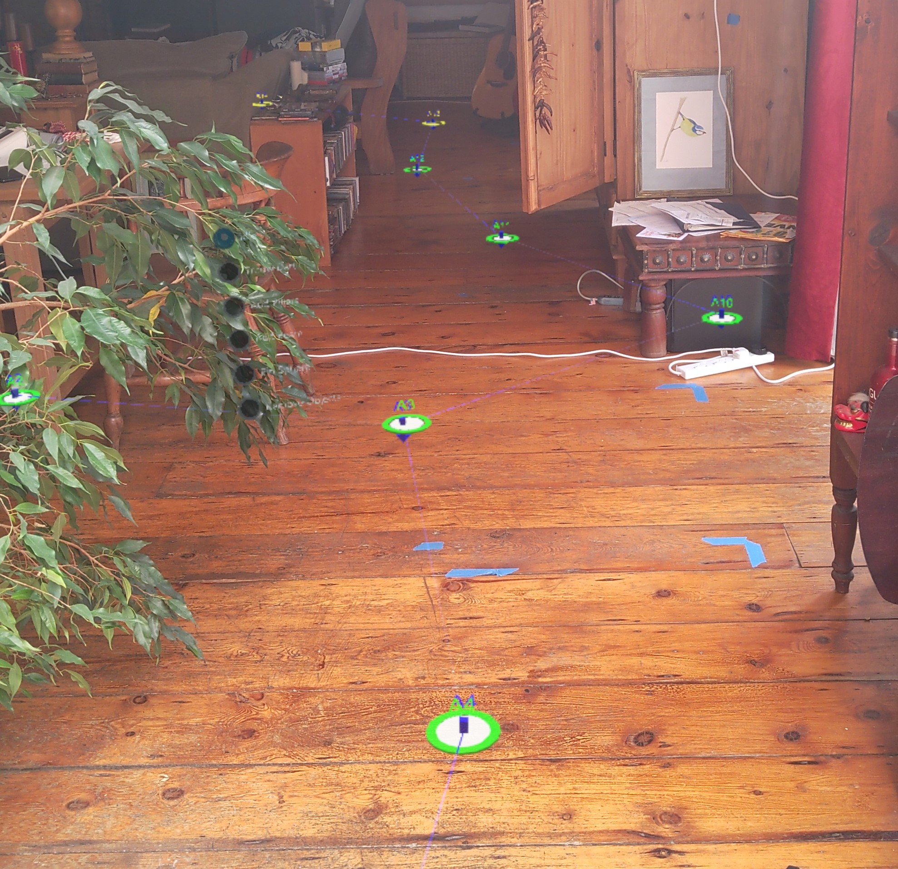
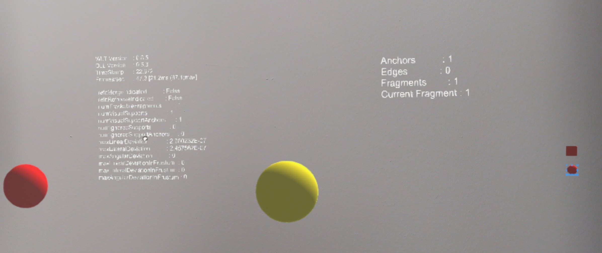

Tools and visualizers
The tools and visualizers in the Microsoft.MixedReality.WorldLocking.Tools namespace are intended to help during development. They may also be a starting point for advanced direct interaction with the World Locking Tools (WLT) system.
While they aren't intended for direct usage as is within an application, the application developer is certainly free to choose to do so.
But whereas the WorldLocking.Core is intended to work as-is in any appropriate application scenario, the Tools may make assumptions about the application which make them inappropriate in other applications.
Before incorporating any of the tools directly within your shipping application, then, consider creating a version of that tool customized for your own requirements and resources.
Tools
Adjusters
Adjusters are components which handle refit events. In particular, they create Attachment Points. In the event of a refit operation, the AttachmentPoint serves as a notification callback. The Adjuster handles that event appropriately.
See further conceptual discussion of AttachmentPoints.
Note that the exact right reaction to a refit event will vary for different types of objects, and is very application specific. For example, if the object's Fragment is currently inactive, then should the object be displayed? For some applications, since the proper placement of the object cannot be determined, it should be hidden. For other applications, it might be better to display the object in a temporarily incorrect pose than to suffer the confusion of its disappearance. And even for applications which should hide the object, there are various ways to perform the hiding (e.g. disabling versus moving far away).
The AdjusterFixed and AdjusterMoving components handle two common scenarios minimally.
The AdjusterFixed component assumes that its target is generally non-moving. If the World Locking Tools sends an adjustment pose due to a refit event, it is intended to keep the AdjusterFixed's object stationary in the world.
In contrast, the AdjusterMoving component assumes that its target is mobile through the Unity coordinate space. It keeps the World Locking Tools system appraised of its target's location, so that in the event of a refit operation, the system can give the most accurate correction to keep the target's position relative to the physical world constant at that moment.
Adapters
The Adapter components are intended for illustration only. If you find yourself using one of the Adapters, you should probably rethink how you are trying to use World Locking Tools.
In particular, MRTK already has built-in adapters, so no further coordinate system transform is required on the part of the application.
There may be times, especially if not using MRTK, when conversion from native resources, which will report in Spongy Space coordinates, to Frozen Space. In those cases, the application developer may find one of the Adapters included here to be a good reference.
WorldAnchorAdapter - An WorldAnchor will adjust an object's pose in Spongy space to remain fixed in physical space. This is redundant with the world-locked space provided by World Locking Tools, and so the object will drift in Frozen Space. This adapter allows a WorldAnchor to maintain the pose of an object in Frozen Space. Note that this is unnecessary except for diagnostics. All objects in Unity's global coordinate space are world-locked by World Locking Tools.
ToggleWorldAnchor - Similar to the WorldAnchorAdapter, but can be toggled. Also automatically converts to regular WorldAnchor behavior when the WorldLockingManager is disabled. Useful only for diagnostics.
FrozenSpatialMapping - An adapter manage and correctly render the results from a SurfaceObserver. Note that the MRTK Spatial Awareness system provides all of this functionality and more, and requires no adapter to work with World Locking Tools.
FrozenTapToAdd - Directly interfacing with Unity's Input system requires conversion of incoming coordinate data as shown here. Note that this is unnecessary with MRTK's input system.
Visualizers
Anchor Graph Visualization
The AnchorGraphVisual and its associated prefab are the core of the supplied visualizations. The component pieces are as follows:
Axes - The current poses for the origins of Spongy Space (green) and Frozen Space (blue) are shown as standard 3 arrow axis identifiers.
Spongy Anchors - These are the native underlying anchors which have been created to feed the Frozen World Engine optimization. Each is represented by a ring, along with a text tag identifying it. Also, more information is conveyed by color and size.
An active tracked anchor will be green.
A tracked anchor with zero relevance will be red.
An unsupported anchor will be yellow.
The larger the ring, the greater the relevance for that anchor.
Frozen Anchors - These are the corresponding reference points in Frozen Space. In the absence of tracker error, these will be exactly aligned with the Spongy Anchors.
Spongy-Frozen Edges - These connect the Spongy Anchors to their corresponding Frozen Anchors. Since in the absence of tracker error, these would be coincident, not seeing these edges means everything is working perfectly. In any case, these edges should not be longer than a few centimeters. They are red on the frozen end, and fade to blue on the spongy end.
Anchor Edges - These thin blue lines show the connections between Spongy Anchors in the anchor graph.

Enabling the display of the anchor graph that World Locking Tools generates as the user moves about the physical environment requires only dropping the WorldLockingTools > Prefabs > AnchorGraphVisual prefab into the scene. It is customarily added as a sibling to the WorldLockingContext, but its exact placement in the hierarchy is unimportant. However, it should not be placed in the camera hierarchy.
Additional output
The World Locking Examples includes text diagnostics. Most of these are relevant only to developers of the World Locking Tools, rather than clients of its abilities. However, they are available for read and, as shown in the StatusToText script, for realtime display.

For post mortem analysis, the Diagnostics section of the WorldLockingContext can be very useful in reporting Frozen World Engine failures. See Reporting a bug for further information.